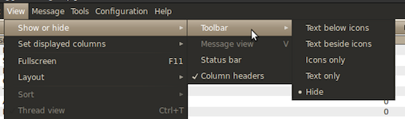

This tutorial is targeted at netbook users, that want to streamline and tweak their Linux. Though it's perfectly suitable for other people, provided they have the necessary knowledge. It has been tested on and meant mainly for the new Ubuntu 10.04 release on an ASUS eeePC 1005PE and a Lenovo S10-2, both running the RC version.
So, I recently purchased a new netbook, the ASUS eeePC 1005PE, which got me with it's serious autonomy, rated to last around 12 hours of normal work. Perhaps needless to say that these numbers always reflect the runtime on the Windows platform, since all the power-saving drivers are written for Windows. Because of my two-year-long relationship with OS X, I got so used to the UNIX underpinnings, and the omni-presence of the command line.
Using Windows just doesn't feel right anymore.
So I had two options: I could hack my way around getting OS X to run, or go with Linux.
The decision was pretty easy, since I knew that I can forget about the great battery life on OS X, because the drivers are close to non-existent. Linux on the other hand has a much bigger community of hackers and tinkerers, and is known to work rather well on netbooks.
Okay, so Linux, what now?
I had to pick a distribution, and since I'm kind of fond of Ubuntu and how they're popularizing Linux in the general public, I went for the Ubuntu Netbook Edition 10.04. The UNE boasts a customized interface to look better and at the same time conserve precious screen real estate on the small netbook displays.
Let's look at an overview of the things I did, to get substantial power savings, performance gains and a totally minimalistic UI.
It has been an interesting journey and I'm happy to share it with you. The process involved many days of googling and trying out applications, to get the most minimalistic platform.
Now I can say I am satisfied with the results and the platform I chose. I regained faith in desktop Linux, though it still has work to be done, to be able to match the feeling of using the Mac OS X.
When you first boot into the system, check if your network is working, then go to the Terminal and issue the update commands.
$ sudo apt-get update
$ sudo apt-get dist-upgrade
$ sudo apt-get upgrade
The last upgrade command might say everything's up to date, but anyway, this will get your system running the latest possible software.
Alin Andrei prepared a nice script for all that decide to freshly install Ubuntu 10.04. Get the latest version at his Ubuntu Start launchpad, you will probably have to select something like Download linked file as, since it's a plain text script.
After downloading, go to the Terminal and issue chmod +x ubuntu-10.04-script to make it executable, then run it
sudo ./ubuntu-10.04-script.
The first screen that greets you, gives you access to random tweaks to everyday functions of the OS. Tick whatever you prefer,
my choices are visible on the screen.
The fix apt-get update is really useful, since it's really annoying to wait every time you issue an
sudo apt-get update after installing Google Chrome.
The second screen lets you quickly install the cream of the crop of Linux apps, plus some codecs and the Ubuntu Tweak utility, which is what is up next.
Now, if you followed my lead and installed Ubuntu Tweak, go ahead and launch it. Easiest way is from the Terminal,
just type ubuntu-tweak and hit return.
The Ubuntu Tweak app lets you install additional software which is good for you and replaces the functionality some of the default Ubuntu-shipped software. Besides that we will use it to fine tune what processes we want to start at login. This of course plays a huge role in the responsiveness and autonomy of the system.
Here my recommendations are as follows, check them out at Application Center:
Then proceed to the Application Cleaner and see if there are any unused packages installed and proceed to remove them.
Next up is the Source Center, which is a complement to the App Center. You can check and install PPA sources for the various software you just installed. This will make automatic cutting-edge updates of various software possible via the standard Ubuntu Update Manager.
Proceed down to the Auto Start Programs, where we will uncheck the unnecessary services and processes, to optimize performance and power consumption.
My choices:
Feel free to check out other options in the Ubuntu Tweak, but these are the most important ones.
In this step we will install the Boot-Up manager, which brings easy editing of runlevel configuration. This enables us to specify which background services and daemons will be running when we boot up.
Fire up Terminal and issue:
$ sudo apt-get install bum
$ bum &
The program is about checking/unchecking stuff, and I can recommend turning off the Bluetooth service and the Print spool/queue, if you aren't planning on using that, of course.
Ubuntu is a great and feature packed distro, but many of it's default programs are pretty bloated, especially for usage on the low performing netbook machines.
One great advantage (and curse) of the Linux platform is the plethora of alternatives available for any part of the system. The same goes for basic software for e-mail, web browsing, playing music, etc.
The default app for mail (and PIM) in Ubuntu is Evolution, which looks great but performs poorly. Try using it for accessing a large GMail account via IMAP if you like pain.
I ruled out Thunderbird because it's still not fast enough for me on Linux, but it's already good compared to Evolution. So stick with it if you like it.
But if you're like me and want to get the fastest and most minimal software out there, you should definitely check out Claws Mail. It's really fast, has a minimal memory footprint and UI. It has one other selling point for netbook use, the so-called "Small screen layout".
Here's what I did to get the most minimal E-mail client for Linux:

Go to View → Show or hide and uncheck Status bar and Column headers. Then go to the Toolbar
submenu and pick Hide.
Go to View → Layout and you'll see the different layouts for displaying e-mail. My favorite is
Small screen which provides me the greatest screen real-estate, because it just displays a listing of
messages in a certain folder. This is great, since I'm mostly just in the Inbox folder anyway.
I was thrilled with Firefox when it came out, but since all it has gotten is slow and clumsy to use. Since Google release Chrome, dubbing it fast and lightweight, I immediately jumped the band wagon.
Chrome on Linux is as fast and slick as on Windows, with it's recent addition of extensions, it's just simply getting better all the time. It's tabs in the title bar don't hurt either for browsing on a netbook.
Luckily we installed Chrome in Step 2. with the Ubuntu Start script, so just go ahead now, and remove Firefox.
$ sudo apt-get remove firefoxUbuntu comes with Empathy as the default IM program. Though there used to be Pidgin ruling the scene, the recent GNOME Telepathy framework is the new kid in town, offering video and audio over XMPP and other goodies.
Read about Pidgin vs. Empathy.
Ubuntu wanted to do good with the new Indicator panel which sits in the main panel on top (the mail letter icon) and groups social networks with instant messaging and e-mail. This is one of the brand new features in Ubuntu 10.04.
The way they do Facebook and Twitter integration is by Gwibber a GNOME app that connects to many social networks including Facebook, Twitter, Flickr, etc.
That's all good intention, but coming from the Mac, I'm used to slick Twitter clients like Tweetie or Twitteriffic and Gwibber just doesn't deliver. It's scrolling is glitchy and it's UI is bloated, providing some kind of mailboxes for each account, though I just want to read my tweets in peace.
Meet Pino. A lightweight, fast, almost polished Twitter client, which does exactly what I expect from a Twitter client. Nothing more, nothing less.
If you listened to me, we already installed Pino in Step 3. with the Ubuntu Tweak app, so just go ahead now, and remove Gwibber.
$ sudo apt-get remove gwibber
$ sudo apt-get install pino # In case you didn't install it in step 3.
I like my portable machines to last, and from a single charge. This is where power management comes to save the day.
Linux has been outperformed in this area by Windows and Mac OS X by far, for a long time. But it's slowly getting better and better, mostly due to better written drivers and also advanced energy efficiency platforms like ACPI for Intel powered computers.
The first thing you want to do, to minimize energy consumption is to install PowerTOP. It's a cute little app from Intel, that analyzes system calls, which in turn are preventing the hardware to go to lower power modes.
Let's go ahead installing it, note that you have to run it with superuser privileges:
$ sudo apt-get install powertop
$ sudo powertop
PowerTOP works like the famous UNIX top program, but it sorts the processes by how much system calls
they're making. It also displays average energy consumption in Watts, but only if you unplug and run
on battery power. Percentage of processing done at different clock speeds is also available, which gives you an idea, if
your system is able to switch speeds to save power.
We look at manually setting clock speed on cores in the section about UI pimpin'.
One great feature of PowerTOP is also that it checks automatically for certain possible optimizations while it's running, and give you an option to apply them immediately.

In this example, PowerTOP detects Bluetooth running, and suggests turning it off to save power. You can do this just by
pressing B.
Get a lot more info on this topic on the great Less Watts site, more advanced users are extremely recommended to check it out.
Alright, my favorite topic, UI pimping and tweaking.
I'm obsessed with my work environment. I can't work in a cluttered or messy setting, where things interrupt me and my concentration. This obsession is visible in both the physical and virtual realms.
For me, an ideal environment is a minimalistic UI, taking as little as possible of precious screen real-estate, where nothing blinks unless I want it to. Us men are extremely sensitive to movement in our viewport, even if it's out of focus. This is due to our ancestor's hunting lives. It poses a serious productivity slump, when IM chat windows and email alerts start to appear.
So to start this process, we will log into the GNOME session instead of the Ubuntu Netbook which is chosen by default. This is necessary so we can manipulate the panels.
Admittedly the CPU FSM panels are not the most minimalistic of things, but they greatly improve your control over the consumption of power. At any time you can force both cores to the Powersave mode.
Now let's proceed installing the lightweight tools that will make the system more cosy.
GnomeDo is an extensible launcher for GNOME. It's a great brother to Launchy for Windows or Quicksilver for Mac.
We installed it in Step 2. with the Ubuntu Start script, so it should already be ready to rock.
Just press Super + Space (Super is the Windows key on PC keyboards) and it's here, ready to do your stuff for you,
if you run it with:
$ gnome-do &Ubuntu Netbook Edition comes with a program called netbook-launcher, which replaces the normal desktop, and just gives you big pretty icons to launch your favorite apps and places.
This is all good and well, but I still prefer my desktop clean and just call upon a launcher when I need to start something. That's why we'll remove the netbook-launcher, which in turn will free up some memory too.
$ sudo apt-get remove netbook-launcher
Guake is a Quake like Terminal wrapper for GNOME. When it loads it's waiting in the background
to serve your daily terminal needs. Just hit F12 and it pops open, prompting input. It supports tabs out of the box
and all other GNOME Terminal preferences can be set.
A must for any power user. And since we installed it in Step 2. with the Ubuntu Start script, just start it with:
$ guake &I hate eye-burn and squinting my eyes when hacking away the night, or reading through a long article. There is a cure.
F.lux makes the color of your computer's display adapt to the time of day, warm at night and like sunlight during the day. And they've got it all supported with sleep research and how color temperature affects us.
To install this for Linux, you first need to fetch the latest build of XFlux for glibc6, and copy it somewhere in your $PATH.
$ wget https://secure.herf.org/flux/xflux.tgz
$ tar xfvz xflux.tgz
$ chmod +x xflux
$ mv xflux /usr/bin
$ xflux -l <lat>, <lng> # You need to get your location here, see below.
As you can see, you have to feed f.lux your latitude and longitude, in order for it to figure out when the sun rises and sets. The easiest way to get your coordinates is to go to Google Maps, search for your location, then copy this into the address bar:
javascript:void(prompt('',gApplication.getMap().getCenter()));This will pop up a JavaScript window, with your latitude and longitude ready to copy. For example, I get the following value for my hometown of Velenje, Slovenia:
46.358712, 15.108So in my case, I'm launching it this way (there's no need to be too precise):
$ xflux -l 46.35, 15.10As the last optimization of the UI, let's replace the default GNOME window manager Metacity with the lightweight Openbox. The process is simple, as Openbox acts as a drop-in replacement for Metacity.
Start with removing Metacity:
$ sudo apt-get remove metacityThen proceed to installing Openbox:
$ sudo apt-get install openbox openbox-themes obconfWhen everything is installed try replacing Metacity on the spot with:
$ openbox --replace
After installing Openbox, you should select the GNOME/Openbox session on login. When logged in, proceed to configure your new Openbox
environment, by launching obconf. At least select a decent theme, that looks good with the default Ubuntu Netbook Edition style.
It has happened to me, that after removing Metacity to replace it with Openbox, the mouse is no longer visible at login (GDM). Well, the mouse
is working, just the cursor is invisible. I haven't yet found a solution to this and there is also a bug
filed for this issue. Luckily in the daily routine, you don't have to worry about this, as you can login without the mouse: just press return
and your username will be selected, then enter your passphrase if one is required. When logged in, the mouse cursor will appear.
Futher information can be found at Ubuntu Community or at the official Openbox site.
Now we want all of this UI goodness to be the default when we login. To do that, we need to go and edit the startup programs. We can do this in the GUI, by launching:
$ gnome-session-propertiesThis gives us a list of programs that start after our login. You can start by double-checking, that we aren't starting anything that we do not need. After that we want to add the following commands, by using the Add button.
gnome-doguake/usr/bin/xflux -l <lat>, <lng>dropbox start -i/usr/bin/maximusopenboxIf you're on an ASUS eeePC 1005PE like me, you'll have to add a line to your boot manager in order to get the ACPI buttons working. This means if you want to change your brightness, volume and other stuff with the Fn keys, there is a fix needed.
Go to /etc/default/grub as root and find the line called GRUB_CMDLINE_LINUX_DEFAULT, then append
acpi_osi=Linux to it. It should look kind of like GRUB_CMDLINE_LINUX_DEFAULT="something acpi_osi=Linux".
$ sudo vim /etc/default/grub
# now edit the GRUB_CMDLINE_LINUX_DEFAULT line, then refresh Grub
$ sudo update-grub2
More information on Linux on the ASUS eeePC 1005PE:
Some ASUS netbooks (like the 1005PE) have an interesting option called Boot Booster, which can save some precious seconds from the overall time needed to boot into OS.
It's activated by default, when you purchase the machine, to speed you into Windows. When we purge the filesystem to repartition and install Linux, the option vanishes.
The thing is that in order for this to work, the BIOS needs an 8MB primary partition (the smallest that you can create), which needs to be marked unformatted. I used the GParted Live USB distro, to boot from a pendrive and repartition my drive.
After you write the partition data with GParted or similar tools, you need to mark the new partition as EFI. If your hard drive is /dev/sda and
number of the new 8MB is 2 (hence /dev/sda2), you can execute:
$ sudo sfdisk --change-id /dev/sda 2 efAnd check it by running sudo sfdisk --print-id /dev/sda 2 and it should print ef.
Done! On the first reboot, allow the ASUS to get familiar with the new partition, and then from the second reboot on, it will bypass the boot messages and boot loader prompts at all, and shave of around 4 seconds of the overall boot time. Sweet.
When Boot Booster is enabled, it might seem difficult a bit to reach BIOS setup. Well, you have around 1/2 of a second to press F2
after the computer starts.
Resources on this:
If during all the updating and installing you start seeing the Setting locale failed error:
perl: warning: Setting locale failed.
perl: warning: Please check that your locale settings:
LANGUAGE = (unset),
LC_ALL = (unset),
LC_TIME = "sl_SL.UTF-8",
LANG = "en_US.utf8"
are supported and installed on your system.
perl: warning: Falling back to the standard locale ("C").
locale: Cannot set LC_ALL to default locale: No such file or directory
It means that your locale setting got messed up somehow. The fix is easy, just set the locale manually somewhere in your environment.
I solved the issue by setting the proper variables in my .bashrc file, like this:
export LC_ALL="en_US.UTF-8"
export LANGUAGE="en_US.UTF-8"
export LANG="en_US.UTF-8"
Here's a list of the resources I learned from to compile this resource.
Please report any typos or other mistakes that might have crawled in. If you liked this resource, recommend it to your friends and/or drop by in the comments section. Thanks!